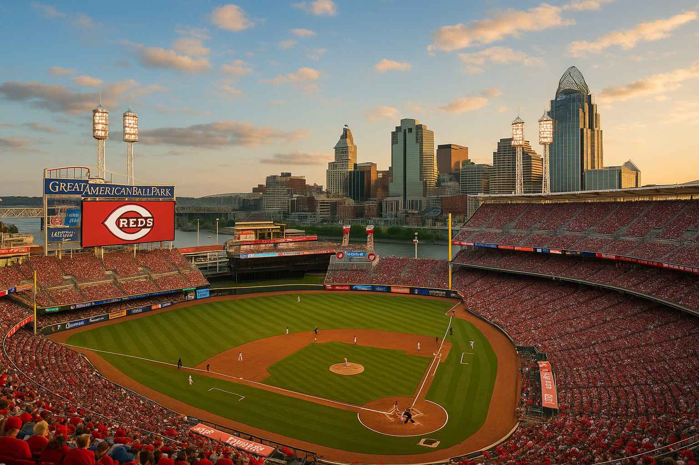
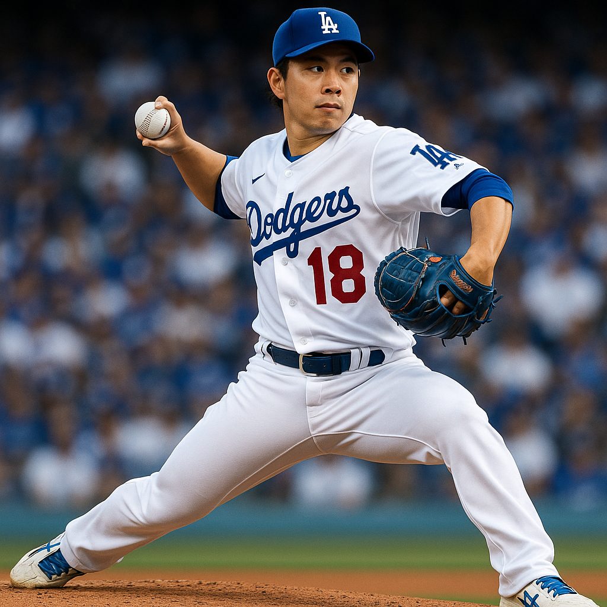
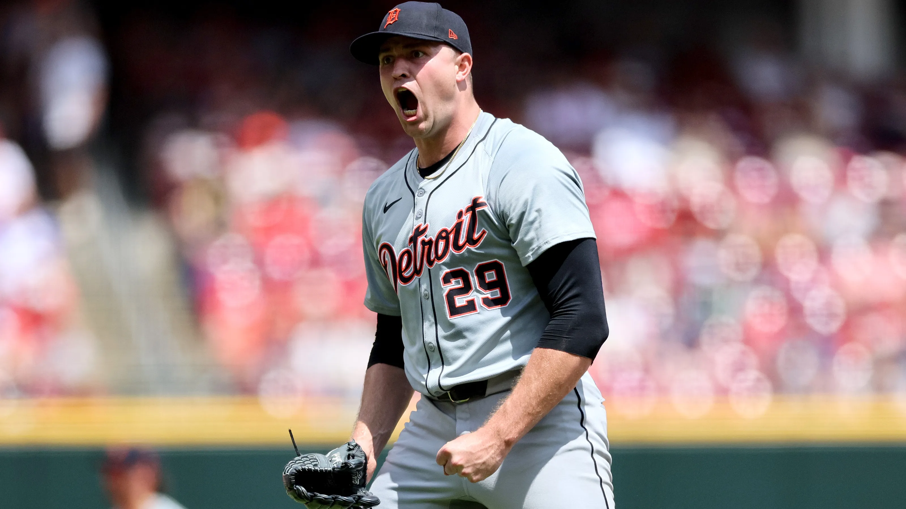
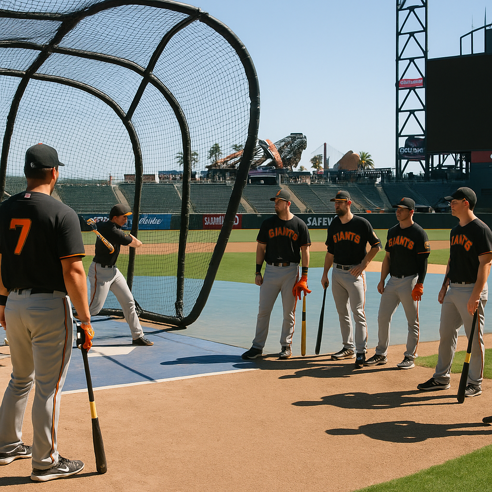
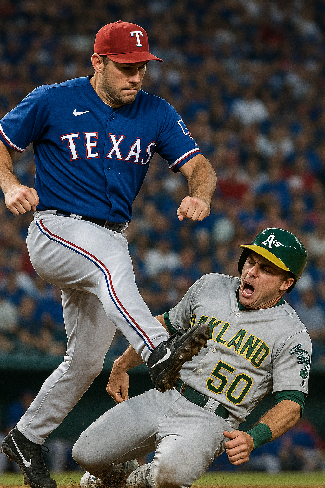
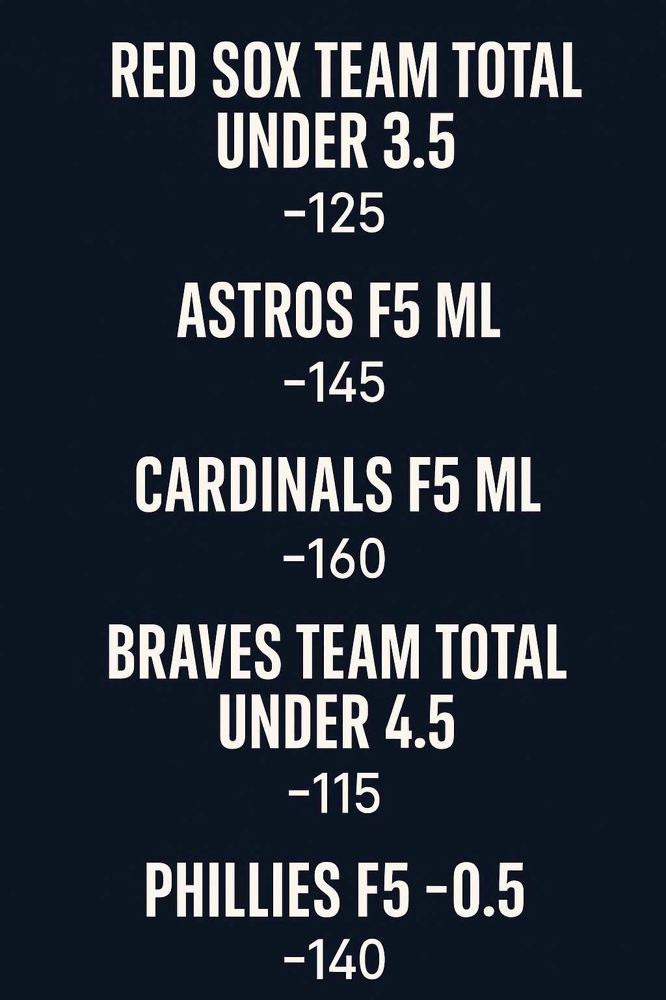

BetLegend Daily Picks and Analysis
Posted: July 31, 2025 4:30 PM
The day is not over. After the lines settled and we processed the final data, another play emerged on the evening slate that presents undeniable value. We don't force plays, but when the numbers align this perfectly, we have to attack. We're adding a third play to the card to cap off what we expect to be our sixth straight winning day.
Mariners / Rangers UNDER 8 (-136)
This play is a direct fade of a team that simply cannot score runs right now. The Seattle Mariners' offense has gone into hibernation, hitting a miserable .193 over their last 10 games and averaging just 2.4 runs per contest. That level of offensive ineptitude makes it incredibly difficult to contribute to a total of 8.
On the mound for Seattle is George Kirby, a solid pitcher who excels at limiting the most damaging hits: home runs. Facing him is a Rangers pitching staff that has been collectively dialed in, posting a stellar 3.13 ERA over their last 10 games. This is a textbook recipe for a low-scoring affair: a non-existent offense, a quality starter, and a red-hot pitching staff. The path to nine or more runs here is a narrow one, and we are confidently betting on the pitchers to dominate.
Official Card for Thursday, July 31st
That completes the official card for today. Let's finish the day strong and cash these tickets.
- Rays First 5 Innings ML (-110)
- Braves/Reds Over 9 (-140)
- Mariners/Rangers Under 8 (-136)
Posted: July 31, 2025 11:00 AM

The heater continues. We are officially on a **five-day winning streak** after another dominant 4-1 performance yesterday brought in **+202 units**. Our analytical process is dialed in, and we are consistently finding the market's inefficiencies. Today's small slate is no different. I've identified two spots where the advanced data and situational trends align perfectly to give us a clear edge. Our goal today is simple: extend the streak to six.
Rays First 5 Innings ML -110
This is a classic fade of a pitcher in a complete spiral. Marcus Stroman's 6.09 ERA is not a result of bad luck; his advanced metrics (5.20 FIP, 44.2% Hard-Hit rate) confirm he is pitching poorly. The most crucial trend for this bet is Stroman's drastic day/night splits: his ERA is significantly worse in afternoon games. We're isolating this by targeting the First 5 innings, putting our money directly on the glaring mismatch between Stroman and the much more reliable Ryan Pepiot (3.43 ERA, 3.65 FIP). Pepiot has demonstrated superior command and contact management, giving Tampa Bay a massive early-game advantage that this -110 price doesn't fully respect.
Braves/Reds Over 9 (-140)
This is the definition of a "perfect storm" for an over. First, Reds pitcher Andrew Abbott's 2.13 ERA is a statistical mirage, with his 4.10 xFIP screaming that major regression is imminent. Second, he faces the worst possible opponent for that regression: the Atlanta Braves, who own a league-best 125 wRC+ against left-handed pitching. Third, the environmental factors are all pro-offense: the game is at Great American Ball Park (a top home run venue), the weather is warm and humid, and the home plate umpire has a notoriously hitter-friendly strike zone. Every single data point aligns for a high-scoring affair.
Posted: July 30, 2025
We have a full slate of games today, and several matchups present clear value. We're focusing on strong starting pitching advantages and a couple of totals where the offenses are primed to perform. Here are the top plays for today's card.
Blue Jays -109 (2 Units)
The Toronto Blue Jays are in a prime position to avoid a sweep against the Baltimore Orioles. [15] They send José Berríos to the mound, who has been a reliable anchor for their rotation with a 7-4 record and a 3.83 ERA. [13, 14] Berríos has been a model of consistency, delivering 13 quality starts in 22 outings this season. [13] Baltimore counters with Dean Kremer, who has been more volatile with an 8-7 record and a 4.23 ERA, and was hit hard in his last start for five earned runs. [13, 15] Despite their recent losses, the Blue Jays have a potent offense and a significant pitching advantage in this matchup, making this a strong value play.
Mariners -149 (2 units)
The Seattle Mariners have a clear edge in their rubber match against the Oakland Athletics. [4] They will start Bryan Woo, who has been outstanding this season with an 8-5 record and an impressive 2.77 ERA. [3] Woo has allowed two earned runs or fewer in six of his last seven starts, showcasing his development into a top-tier pitcher. [32] Oakland will start lefty Jeffrey Springs, who holds a 9-7 record with a 4.13 ERA. [4] The significant gap in starting pitching, combined with Woo's history of dominating the A's, makes Seattle a strong favorite to take the series.
Rangers -132
The Texas Rangers turn to their ace, Nathan Eovaldi, to halt their recent skid against the Los Angeles Angels. [6] Eovaldi has been nothing short of brilliant this season, boasting an 8-3 record with a stellar 1.50 ERA and 10 quality starts. [1] The Angels will counter with José Soriano, who has a 7-7 record and a 3.79 ERA. [1] The pitching matchup heavily favors Texas, giving them a prime opportunity to avoid a sweep.
Angels/Rangers F5 under 4.5 -140
With Nathan Eovaldi and his minuscule 1.50 ERA on the mound for the Rangers, runs are expected to be scarce in the early innings. [1, 8] Eovaldi has been a consistent force, shutting down opposing lineups all season. The Angels' starter, José Soriano, also has a respectable 3.79 ERA and is capable of keeping his team in the game. [1, 5] This sets the stage for a classic pitchers' duel, making the under for the first five innings a compelling play.
Blue Jays/Orioles over 10 (-107)
The Baltimore Orioles' offense has been explosive, scoring 30 runs in the first three games of this series. [15] While José Berríos is a solid pitcher for the Blue Jays, he faces a red-hot Orioles lineup. On the other side, Toronto's powerful offense, which leads the league in batting average, gets to face Dean Kremer and his 4.23 ERA. [13, 23] With two high-powered offenses going head-to-head against pitchers who can be vulnerable, this game has all the makings of a high-scoring affair. [45]
Posted: July 29, 2025 10:30 AM
We've got a great slate of games on deck for Tuesday, and there are some interesting spots to look at. From dominant pitchers to divisional matchups, here are the plays that stand out.
Dodgers/Reds F5 under 4.5 (-110) 2 units
This is a fantastic pitching matchup that's hard to ignore. The Dodgers are sending Tyler Glasnow to the mound, and he has been lights out recently, allowing one earned run or fewer in his last three starts. On the other side, the Reds have Nick Lodolo, who has given up a combined two earned runs in his last three outings. Both of these guys are in a great rhythm, and I expect a low scoring affair early on. The full game total is set at 9, but the first five innings should be a pitcher's duel.
Tigers -140
The Tigers are on the road against the Diamondbacks, but they have Casey Mize on the mound, who has been excellent this year with a 9-4 record and a 3.40 ERA. Arizona will counter with Brandon Pfaadt. While the Diamondbacks have some pop in their lineup, the Tigers have been the more consistent team and have a clear advantage on the mound in this one. Detroit has the edge and is a solid favorite.
Blue Jays/Orioles over 8 -110 (Game 1)
This is the first game of a doubleheader, and both teams can put up runs. The Blue Jays have been hot at the plate, and eight of the last ten meetings between these two have gone over the total. The Orioles just put up 11 runs against the Jays on Monday night. While Eric Lauer is on the mound for Toronto, and coming off a strong start, the Orioles will have Charlie Morton, who struggled against the Blue Jays earlier this season. Expect the bats to stay alive in the early game.
Royals -120
The Royals are at home against the Braves, and while Atlanta is a tough team, Kansas City has a good chance with their pitching. The Royals' pitching staff has been solid this season. This is a spot where the home team can pull off a win at a decent price.
Yankees -187
The Yankees are at home against the Rays and are a heavy favorite for a reason. New York is looking to bounce back from a tough stretch, and a home game against a division rival is a good spot for it. The Yankees have a potent offense that can give Tampa Bay's pitching trouble.
Mariners -108
This is a near pick'em, but I like the Mariners on the road against the Athletics. Seattle has Logan Evans on the mound, and they have been the better team this season. The A's will counter with Luis Severino. While the A's have some power, the Mariners have been more consistent, and this is a good value spot for a team with a winning record.
Posted: July 28, 2025 2:30 AM

Alright team, let's get into the Monday slate. After digging deep into the advanced metrics, situational trends, and pitching matchups, I’ve locked in a card that presents clear, quantifiable edges. We're attacking a couple of massive mismatches, playing a sharp pitchers' duel, and backing a live home dog. We're kicking it off with our highest conviction play of the week. Let's ride.
Dodgers -165 (2 Units) vs. Reds
This is the spot we're attacking with supreme confidence. The value on the Dodgers moneyline is undeniable, and it all boils down to the massive chasm on the pitcher's mound. We get LA's ace, Yoshinobu Yamamoto (2.56 ERA), who has been nothing short of spectacular, allowing one run or fewer in four of his last five starts. He’s a true stopper with elite command.
On the other side is Cincinnati's Chase Burns. Don't be fooled by the arm talent—his 6.86 ERA tells a story of volatility and a lack of control. While he has an elite 35% strikeout rate, that kind of wildness is a recipe for disaster against a patient, veteran Dodgers lineup that will not expand the zone. Burns will issue walks, get into deep counts, and eventually serve up a mistake that this offense will punish. We are backing a legitimate Cy Young candidate against a talented but erratic rookie. This is precisely the kind of edge we look for in a 2-unit play.
Phillies -1.5 (-132) vs. White Sox
This is the biggest mismatch on the entire board. The moneyline at -208 is unplayable, so we turn to the run line, where we find excellent value. Philadelphia's Cristopher Sánchez has been lights out, posting a pristine 2.40 ERA and a 1.09 WHIP. He's facing a White Sox team that is one of the worst in baseball, and they're throwing Drew Martin and his underwhelming 4.22 ERA. The potent Phillies lineup should have an absolute field day. This isn't just a bet on the Phillies to win; it's a bet on them to win decisively, which is the most probable outcome.
Mariners Moneyline (-132) vs. Athletics
I love this spot for Seattle. This play centers on Logan Gilbert, who has been a consistent force for the Mariners. More importantly, he has historically dominated the Oakland A's. He knows how to pitch to this lineup in their ballpark, and the A's offense remains one of the least threatening in the sport. They simply don't have the offensive firepower to solve an ace-level pitcher like Gilbert. The -132 price tag feels like a discount and doesn't fully account for the massive, proven advantage Seattle has on the mound tonight.
Astros F5 -0.5 (-140) vs. Nationals
This is a sharp, surgical way to bet this game. We're isolating the biggest advantage Houston has: Framber Valdez on the mound for the first five innings. Valdez and his elite groundball rate should have no problem navigating a weak Nationals lineup early on. By betting the F5 line, we completely bypass the Astros' sometimes-shaky bullpen and remove the possibility of a meaningless backdoor cover late in the game. It’s a simple question: will Valdez and the Astros have a lead after five against Brad Lord and the Nats? The probability is overwhelmingly "yes."
Cubs vs. Brewers Under 8 (-105)
This is the pitcher's duel of the night. You have two teams with identical records (62-43) in a critical divisional game. These high-stakes matchups inherently lend themselves to low-scoring, intense baseball. More importantly, the pitching is elite. The Cubs' Matthew Boyd (2.21 ERA) and Brewers' top prospect Jacob Misiorowski (2.48 ERA) have both been phenomenal. Runs will be at an absolute premium. All signs point to a tight, 3-2 or 4-3 type of game that stays well under the total.
Royals Moneyline (+148) vs. Braves
Here's our live underdog play, and it's a fade of a team that has no business being this big of a favorite on the road. The Braves are in an absolute freefall, going 2-8 in their last 10 games, and their road record (18-34) is simply atrocious. The Royals, meanwhile, are playing confident baseball at home. Yes, Spencer Strider is an ace, but he can't hit for the offense. This Atlanta lineup has gone cold, and backing them at this price, with their road struggles, feels like a trap. We'll take the value with the home team that is in far better current form.
Posted: July 27, 2025 1:15 AM
Alright, let's cap off the week with a strong card. I've broken down the entire Sunday slate and landed on five spots where the value is too good to pass up. We're leading with a high-conviction 2-unit play on a massive pitching mismatch and backing it up with solid plays across the board. Let's get to the winners.
Pirates F5 -175 (2 Units)
This is the play of the day, and it's not particularly close. We're getting the electric Paul Skenes on the mound for the Pirates. Skenes has been an absolute force, and we're isolating his start by targeting the first five innings. This allows us to bypass the bullpen and focus on the overwhelming starting pitching advantage. He's facing a Diamondbacks lineup that he has already dominated once this season. The price is high for a reason, but there's still incredible value in backing one of the league's most dominant arms against a struggling opponent. This is a situation we have to attack with confidence.
Orioles -1.5 (-108)
The Orioles are in a prime position to win this game by multiple runs. They face the Rockies' Austin Gomber, who has been one of the most hittable pitchers in baseball, sporting an ERA north of 6.00. The Orioles' powerful offense should have a field day against him. Baltimore's lineup has been launching home runs left and right, and they have the offensive firepower to cover the run line with ease against a struggling pitcher and a weak Rockies bullpen.
Brewers -166
We're backing another ace at home in this spot. The Brewers have Brandon Woodruff on the mound, who has been lights out, especially in his home ballpark. He faces a Marlins team that consistently struggles to generate offense. Woodruff has a history of shutting down this Marlins lineup, and with the Brewers playing solid baseball at home, this is a straightforward moneyline play. We're trusting the better pitcher and the better team to get the job done.
Orioles/Rockies over 9.5 (-127)
This total is a great complementary play to our Orioles run line bet. We've already established why Baltimore's offense should put up a crooked number against Austin Gomber. However, the Rockies should be able to contribute to the total as well. The Orioles' starter is not an overpowering arm, and the game is taking place in the hitter-friendly Coors Field. With two bullpens that have been shaky at best, we expect plenty of runs to be scored throughout this game, making the over a strong play.
Royals/Guardians under 9 (-138)
To round out our card, we're taking the under in a divisional matchup featuring two struggling offenses. The Guardians currently rank near the bottom of the league in most major offensive categories, and the Royals have not been much better. Both teams are sending capable pitchers to the mound who should be able to navigate these weak lineups. This game profiles as a classic pitcher's duel where runs will be at a premium. We're confident in a low-scoring, clean game that stays under the total.
Posted: July 26, 2025 11:40 AM

What's up everyone! Hope you caught our Giants first 5 innings play from the earlier post this morning. That starting pitcher edge was too good to pass up at that number.
Got two more spots I'm backing for today's Saturday slate after digging into all the matchups. Both plays are targeting clear advantages I'm seeing in the market.
Cubs -1.5 (-115)
The Crosstown Classic continues tonight and I'm taking the Cubs to cover the run line. Look, the White Sox shocked everyone last night with that 12-5 beatdown, but that felt like lightning in a bottle. The Cubs have absolutely owned this rivalry recently, winning eight straight before Friday's game.
The pitching matchup heavily favors the North Side today. The Cubs starter has been much more consistent this season while the White Sox are throwing a guy with an ERA approaching 5.00. When you factor in the Cubs superior lineup depth and bullpen, laying 1.5 runs at essentially even money feels like solid value.
The market is probably overreacting to last night's result. Sometimes teams have those explosive offensive games that don't really tell the story of who they are. The Cubs are the better team here and should bounce back in a big way.
Tigers -0.5 First 5 Innings (-140)
This one goes against the grain but I like backing the home team early. The Blue Jays have been red hot lately and everyone's jumping on that bandwagon, but I think the market is getting a bit ahead of itself.
The Tigers starter at home should keep this competitive through the first five innings. Detroit desperately needs to stop their recent slide and having their guy on the mound at Comerica gives them the best chance to get off to a strong start.
The Blue Jays have been scoring runs in bunches but they're facing a different level of pitcher today. First five innings removes all the late game chaos and lets us focus purely on the starting matchup. Getting the home team at a reasonable price feels right.
Both of these plays focus on situations where I think the market hasn't properly adjusted. The Cubs should dominate this rivalry game while the Tigers can at least hang tough early at home.
Posted: Saturday, July 26, 2025 at 1:26 AM PST
Good morning, degenerate friends. While you're probably either just getting home from the bars or waking up way too early like me, I've been diving deep into tonight's Mets at Giants matchup at Oracle Park, and I found something that's got me genuinely excited.
The line that caught my eye is the Giants first 5 innings at -135. Now I know what you're thinking - the Mets are 59-44 and rolling right now while the Giants are struggling at 54-49. On paper, this looks like we should be backing the better team. But baseball isn't played on paper, and sometimes the best bets are the ones that make you do a double take.
Let me walk you through why I think this Giants F5 line is actually offering us some real value.
The Pitching Matchup That Changes Everything
This game comes down to a fascinating pitcher duel between two lefties: Robbie Ray for the Giants and David Peterson for the Mets. On the surface, both guys have solid numbers this year. Ray is sitting at 9-4 with a 2.92 ERA, while Peterson checks in at 6-4 with a 3.06 ERA. Pretty comparable, right?
Wrong. And this is where things get interesting.
Robbie Ray has been absolutely dealing this season, especially considering he's coming back from Tommy John surgery. The guy has 131 strikeouts in just 123 innings, which tells you everything about his stuff. But here's the kicker - his advanced metrics back up his performance. When hitters make contact against Ray, they're averaging just 91 mph exit velocity with a 43.9% hard hit rate. Those are elite numbers that suggest his success is sustainable.
David Peterson, on the other hand, is living dangerously. Sure, his 3.06 ERA looks nice, but dig deeper and you'll find some concerning red flags. His expected ERA sits at 4.58, and his advanced metrics like xFIP (5.26) and SIERA (5.11) are screaming regression. Peterson has been getting by on a .233 batting average on balls in play, which is basically baseball's way of saying he's been lucky. Very lucky.
The guy has also seen his strikeout rate plummet from 26% to under 20% since he started relying more heavily on his sinker. When you can't miss bats consistently in today's game, you're playing with fire.
Oracle Park in July - A Pitcher's Paradise
If you've ever been to Oracle Park in July, you know it's a completely different beast than most ballparks. Tonight's forecast calls for 64 degrees with 93% humidity and those famous San Francisco winds gusting up to 21 mph. This isn't just cool weather - this is the kind of marine layer conditions that turn fly balls into lazy pop ups.
Oracle Park is already one of the most pitcher-friendly environments in baseball, but add in these conditions and it becomes downright hostile to hitters. Ray's strikeout ability becomes even more valuable when the weather is suppressing offense across the board. Meanwhile, Peterson's ground ball heavy approach might seem like it would benefit from these conditions, but his control issues become magnified when he can't afford to give hitters anything good to hit.
The Recent Form Factor
Yeah, the Mets have been hot lately, going 6-4 in their last 10 with a solid 3.68 ERA. But here's the thing - team momentum doesn't always translate to individual pitcher performance, especially when we're talking about a guy who's been outperforming his peripherals all season.
The Giants might be struggling overall at 3-7 in their last 10, but Ray individually has been their bright spot. He's the guy who got selected for the All-Star team as a replacement, and his stuff looks as good as it did during his Cy Young campaign in 2021.
Why The Market Is Wrong
I think the betting market is making a classic mistake here. They're looking at team records, recent overall performance, and surface level stats without diving into the individual matchup that matters most in the first five innings. The Giants being -135 implies about a 57% chance they lead after five, but my analysis suggests they should be closer to 60% favorites.
That might not sound like a huge edge, but in baseball betting, a 2-3% edge is the difference between long-term profit and long-term losses. The market is essentially giving us a discount on what should be a stronger favorite.
Peterson's regression indicators are too strong to ignore. When a pitcher has an ERA that's nearly two full runs better than his expected metrics suggest, that's not sustainable. Baseball has a funny way of correcting these imbalances, and I think tonight might be one of those correction games.
The X-Factors
There are a couple other things working in our favor here. First, this is the second game of the series, and Ray had to watch his teammates struggle through a tough loss yesterday. Home starters often come out with extra intensity in these spots, especially when they know they're the stopper the team needs.
Second, the Mets' recent offensive success has been driven largely by their ability to get to mediocre pitching. Ray isn't mediocre pitching. Even their big names like Juan Soto and Pete Alonso can struggle against elite left-handed stuff, and Ray's slider is legitimately one of the better pitches in baseball right now.
The Bottom Line
Look, I'm not saying this is a mortal lock or anything crazy like that. Baseball is baseball, and weird stuff happens every night. Peterson could absolutely get lucky again and piece together five solid innings. The Mets could jump on Ray early before he settles in. That's why they play the games.
But when I see a line where I think the probability is off by 2-3%, especially in a spot where the better pitcher has environmental factors working in his favor, I'm going to take a swing. The Giants at -135 for the first five innings feels like one of those bets where everything lines up just right.
The Pick: Giants First 5 Innings -135 (1.5 units)
As always, bet responsibly and never wager more than you can afford to lose. This analysis is for entertainment purposes only.
Posted: 01:48 AM – 07-25-2025

Friday's card gives us five matchups where the pitching edge is clear enough to back. No guesswork here, just real splits, park factors, and starter profiles that favor our side. Let's run through all five plays for July 25.
Starting with the Giants and Mets first 5 under 4.5. Logan Webb has been excellent at Oracle Park this season, holding a 2.38 home ERA across 10 starts. Clay Holmes has transitioned into a rotation role surprisingly well, carrying a 3.50 ERA and generating a groundball rate over 55 percent. Both teams are bottom 10 in runs scored in the first five innings this month. With colder air expected at night in San Francisco, run prevention should dominate early.
Staying with that same game, we're also on the Giants moneyline at -137. San Francisco is 28 and 20 at home and has won five of Webb's last six starts. The Mets bullpen has been running on fumes and enters with a 4.85 ERA over the last 30 days. New York's offense is also averaging under four runs per game in their last 10 contests.
Next is the Cubs and White Sox first 5 innings under 4.5. Shota Imanaga continues to be one of the most consistent left-handers in the league with a 2.40 ERA and elite command. Adrian Houser has surprisingly posted a 1.89 ERA since joining the Sox rotation, and both teams rank bottom 10 in OPS against the opposing hand. Guaranteed Rate Field has played neutral this year, and with both lineups leaning cold, it's a good setting for an early under.
The fourth spot is Mariners and Angels first 5 innings under 4.5. Bryan Woo enters with a 2.92 ERA and has allowed one or fewer runs in four of his last five outings. José Soriano counters with a 3.83 ERA and a high groundball rate that works well in Anaheim. These teams are a combined 13 and 7 to the under in their last 20 games. Seattle is also just 23rd in F5 scoring this season.
Finally, we're backing Brewers first 5 -0.5 behind Freddy Peralta. He's been dominant at home with a 2.10 ERA and over 11 strikeouts per nine innings. The Marlins send out Cal Quantrill, who carries a 5.28 ERA and has a .296 xBA against. Milwaukee is 33 and 17 at home and their F5 win rate against righties ranks top five in the league. Good edge early with bats behind Peralta's arm.
All five of these matchups grade out well based on current splits, recent form, and starting pitcher profiles. No hero ball here, just sharp baseball.
Let's cash some tickets.
Posted: 10:33 AM – July 24, 2025

The card for July 24 brings three sides that offer value across different tiers of the board. We're looking at a live underdog in San Diego, a motivated bounce-back spot for the Astros, and a reliable bullpen-backed team in Cleveland. Here's how it breaks down:
The Padres are on the road facing a lefty, which is where their offense tends to thrive. San Diego has posted a top 10 OPS against southpaws this season, and Yu Darvish gets the ball today. When healthy, he's still capable of going deep and neutralizing a lineup that doesn't hit his splitter well. The Padres bullpen has been better than league average over the last two weeks, and the price at +134 gives enough cushion for volatility.
The Astros are laying a short number at -127 in a spot where their starting pitcher has thrown quality starts in four of his last five outings. Houston's offense hasn't been dominant, but they've done their job against mid-tier pitching and still rank top 5 in hard-hit rate. The bullpen is a concern if overused, but it's in decent shape going into today.
Cleveland comes in as a modest favorite at -114 with a solid pitching edge. Their starter has a better FIP and walk rate than the opposing arm, and Cleveland's bullpen is ranked top 3 in ERA and WHIP over the past month. In close games, they've been winning more often than not thanks to situational hitting and bullpen efficiency. This is a team built to win tight contests.
Nothing fancy here, just three numbers that offer value when cross-checked with matchup data and current market pricing.
Final card:
- Padres +134
- Astros -127
- Guardians -114
MLB Picks 7/23/25: Rare 2-Unit Bomb on Rangers
Posted: July 23, 2025 – 1:48 AM

This is the first time in a while we've gone with a two-unit play, and for good reason. We're sitting at 1 and 0 on the year with these rare spots, and we're looking to move to 2 and 0 behind a strong edge in Texas. The Rangers are back home, where they've been solid all season, and they send Patrick Corbin to the mound. Corbin enters this matchup with a 3.91 ERA and has looked sharp in July. In his most recent outing, he tossed five and two-thirds scoreless innings and struck out six. He's doing a better job keeping the ball on the ground and limiting hard contact early in counts.
Oakland counters with JP Sears, who has a 5.17 ERA and has given up a .274 opponent batting average on the year. Sears has had particular trouble with left-handed hitters and hasn't shown much consistency on the road. The A's are just 22 and 30 away from home this season and continue to rank near the bottom of the league in runs scored per game. Texas, on the other hand, is 30 and 20 at home and has won seven of its last ten. They've been getting production from all over the lineup lately and are simply in a better rhythm on both sides of the ball. The Rangers have the bullpen edge too, which gives them a clear advantage if this turns into a close game late.
We're not the type to throw around two-unit plays every day. This is a spot where everything lines up. The home form, the pitching matchup, the splits, and the momentum are all pointing the same way. It's a full confidence swing, and we're riding with Texas to deliver.
Now here's the rest of the card for July 23rd:
- Brewers and Mariners First 5 Innings Under 4.5 at -140
- Guardians First 5 Innings -140
- Padres -148
- Mets and Angels First 5 Innings Over 4.5 at -135
In Seattle, Quinn Priester takes the ball for Milwaukee with a 2.65 ERA. He's been efficient and keeps the ball in the yard. The Mariners counter with Luis Castillo, who holds a 3.21 ERA and has been strong at home. Both starters have been consistent this month, and the under trend in first five innings has been favorable when these types of arms match up. Milwaukee has gone five and five to the over in their last ten, while Seattle has hit the over in seven of their last ten, but many of those runs have come late in games. This sets up for a lower scoring start before the bullpens get involved.
Cleveland continues to be one of the hottest teams in baseball, winning eight of their last ten. They're back home against Baltimore and face Zach Eflin, who comes in with a 5.95 ERA. Eflin has been getting hit hard and has not been able to locate consistently in recent outings. The Guardians have been very good in the early innings this season, and they're now 27 and 21 at home overall. Cleveland's lineup is putting together quality at-bats and finding ways to score early, while the bullpen continues to hold leads when it has to. This feels like another strong spot for them in the first five innings.
The Padres are on the road against Arizona, and they've looked much more consistent lately. They've outscored opponents by 11 runs since the All-Star break and have tightened up the back end of their bullpen. San Diego's offense is starting to come through in key spots, and they've won six of their last ten. Arizona has hovered around .500 but hasn't put together a strong stretch. They've struggled in close games and haven't been able to rely on their pitching to hold up. San Diego has the edge in multiple areas and should be in a good spot here if they play clean baseball.
And finally, we've got what could be a high-scoring game in Anaheim between the Mets and Angels. Both teams come into this matchup trending toward the over. The Mets have gone seven and three to the over in their last ten, and the Angels bullpen has an ERA north of five over the last month. This game features two starters who have been inconsistent and allow a lot of traffic on the bases. Both offenses are capable of putting up crooked numbers, especially early. The weather is warm and conditions favor the hitters, so the first five innings over makes a lot of sense given how these teams have been swinging the bats.
We're going into this slate with five solid angles, led by the Rangers as our rare two-unit bomb. It's all backed by real data, live trends, and matchup context. Let's see if Texas can take care of business and set the tone for the day.
Posted: 11:06 PM — July 23, 2025

Looking ahead to Tuesday's slate, a handful of early edges stood out based on starting pitcher splits and situational trends. We've got five picks that all share a common theme—favorable matchups in the first five innings or with team totals that look inflated.
Boston faces Cristopher Sanchez in Philly, and that's a tough task right now. Sanchez has been carving through lineups early, and Boston's offense hasn't traveled well this season. The number is low, but under 3.5 still feels playable.
The Astros draw a beatable arm in Arizona and have Framber Valdez going for them. We're backing them in the first five. Valdez doesn't mess around—he works fast and puts up zeroes early, especially against weaker lineups.
St. Louis heads into Coors Field with Erick Fedde, who's quietly been reliable early. Colorado's starter, meanwhile, is rocking an ERA over 11. This play is more about the Rockies being a disaster than the Cards being elite.
We're also taking the Braves under 4.5 runs against Atlanta's rookie opponent. The line feels about a run too high given how Atlanta's bats have looked lately, and the starting matchup doesn't help their case.
Lastly, we're going with the Phillies on the first five run line. Richard Fitts is on the hill for Boston and it's a bad setup for him. Philly should be able to get to him early while Sanchez gives them breathing room on the other side.
- Red Sox Team Total Under 3.5 (–125)
- Astros First 5 Innings ML (–145)
- Cardinals First 5 Innings ML (–160)
- Braves Team Total Under 4.5 (–115)
- Phillies First 5 –0.5 (–140)
Five edges, all backed by real numbers. Let's see how it plays out.